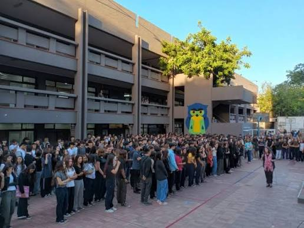

CAPÍTULO 4 DE 4 · CUC
DESDE
1943
Mendoza · UNCUYO
COLEGIO UNIVERSITARIO CENTRAL
CUC
Una propuesta para preparar el camino hacia los estudios superiores

El Colegio Universitario Central nació pocos años después de la creación de la Universidad Nacional de Cuyo.
Desde sus comienzos, forma parte de la historia educativa de la universidad y de Mendoza.
Conocer su origen →